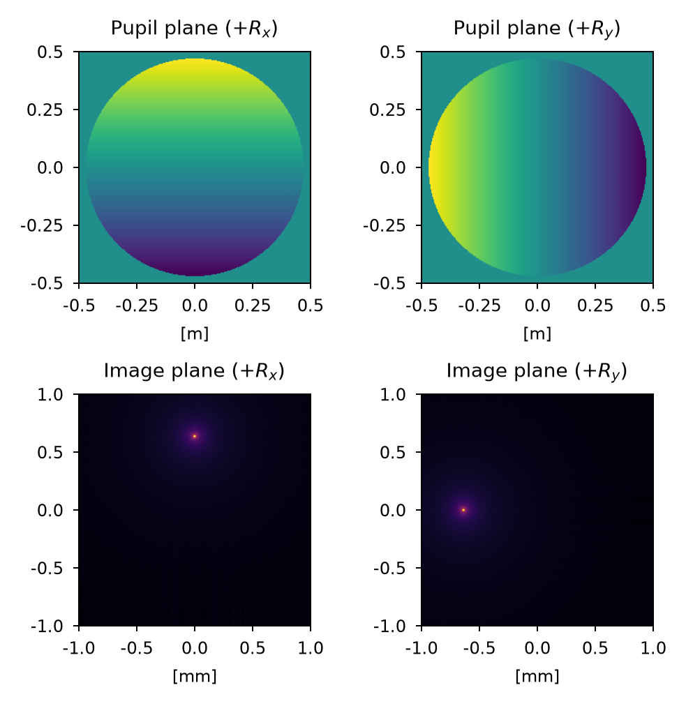
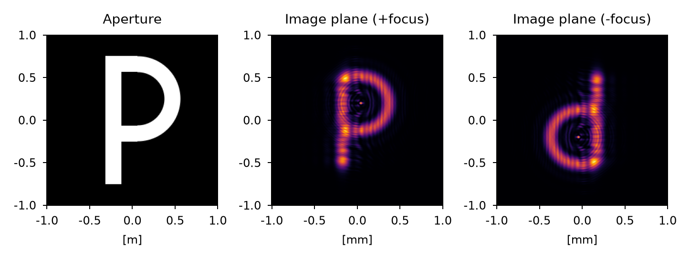
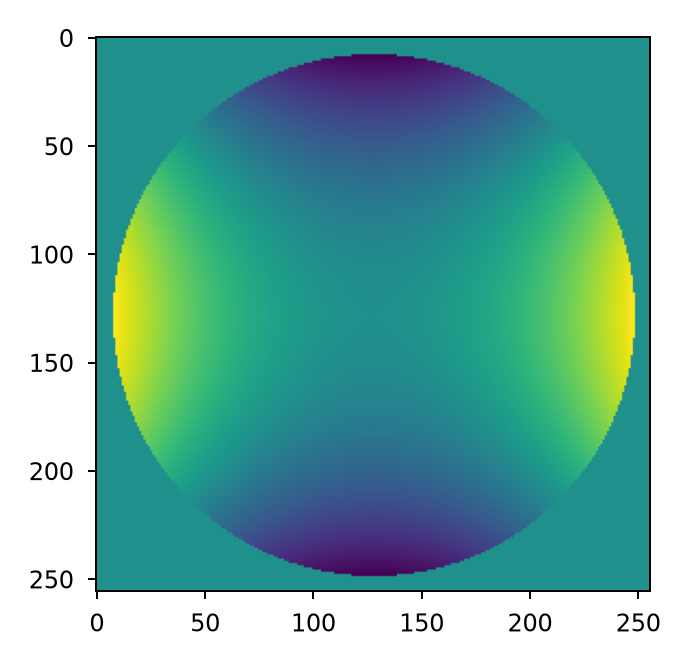
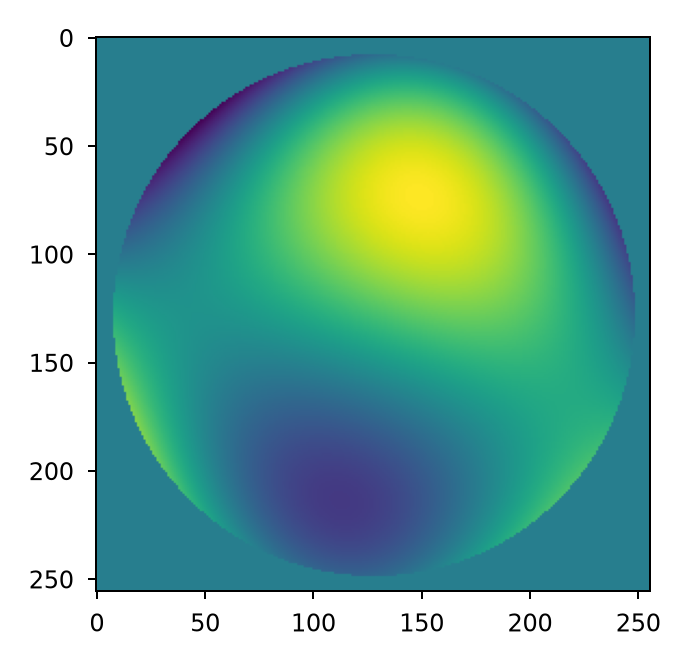
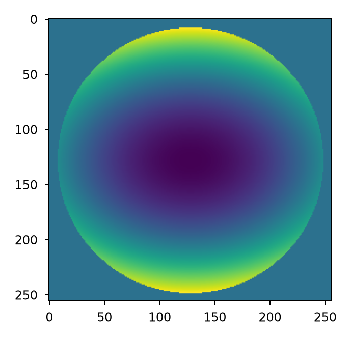
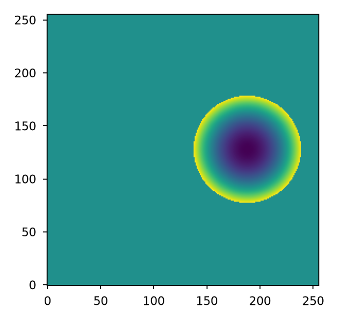
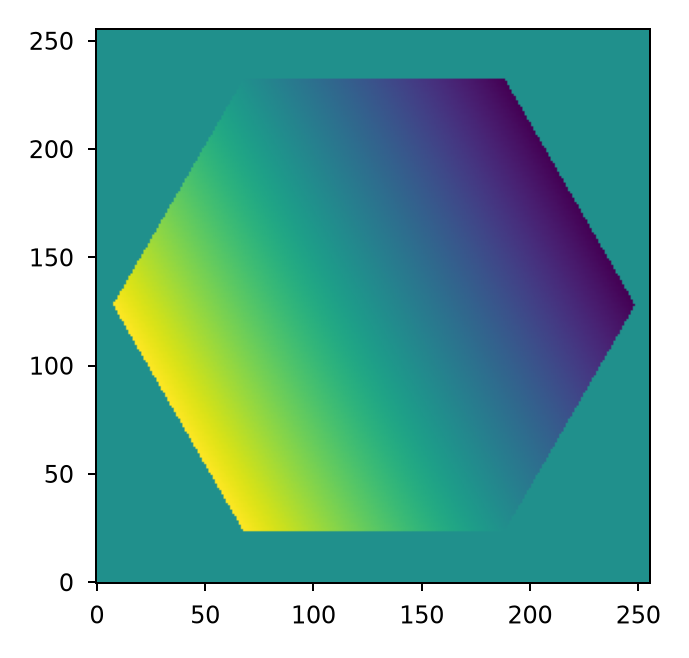
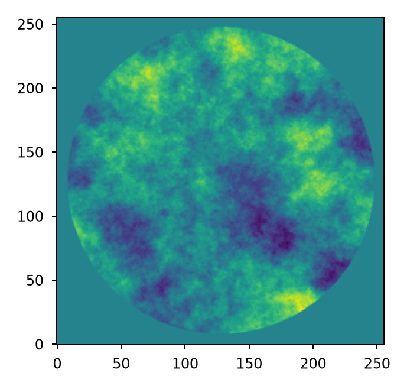

Representing wavefront error#
Wavefront error is represented in a Plane by specifying its
opd attribute. For static errors, a simple wavefront error map is
sufficient. For more complicated errors that are random or time-varying in nature, a
more dynamic and/or state-based approach is required.
Any Python type that is array-like can be provided and will be converted by Lentil to a Numpy array.
Note
For Pupil planes, the opd attribute represents
the optical path difference (OPD) relative to the pupil’s reference sphere.
Wavefront error sign convention#
For the purposes of representing wavefront errors, Lentil assumes that a positive OPD is indicative of a ray traveling farther than the chief ray, while a negative ray travels a shorter distance than the chief ray.
Tip/tilt#
A positive x-tilt rotates the yz plane clockwise about the x-axis resulting in a shift in the image plane in the positive y direction. A positive y-tilt rotates the xz plane clockwise about the y-axis resulting in a shift in the image plane in the negative x direction.

Focus#
A positive focus has the effect of shifting the focus point beyond the image plane (+z) while a negative focus has the effect of shifting the focus point in front of the image plane (-z).

We can test this by observing +/- defocused point spread functions of an imaging system with an asymmetric aperture (for example, in the shape of the letter P). We expect the positive focus image to have the same orientation as the aperture (consistent with observing the image before coming to focus) and the negative focus image to be flipped about both axes relative to the aperture (consistent with observing the image after passing through focus). The results of this exercise are presented below:

Static Errors#
Lentil can use static error maps from a multitude of formats, provided you can get the data into Python. Common file formats are .npy or .fits files. Here we load an .npy file containing the JWST NITCam static wavefront error:
>>> import numpy as np
>>> import lentil
>>> opd = np.load('nircam_wfe.npy')
>>> pupil = lentil.Pupil(focal_length=119.77, pixelscale=6.6035/1024, opd=opd)

Zernike Polynomials#
Lentil provides methods for creating, combining, fitting, and removing Zernike polynomials.
Note
Zernike modes can be ordered according to the Noll, Fringe, or ANSI
schemes
by specifying the order parameter. Supported values are noll (default),
fringe, or ansi.
Wavefront error maps are easily computed using either the zernike() or
zernike_compose() functions. For example, we can represent 100 nm of
astigmatism over a circular aperture with zernike():
>>> mask = lentil.circle((256,256), 120, antialias=False)
>>> astig = 100e-9 * lentil.zernike(mask, index=6)
>>> plt.imshow(astig)

Any arbitrary combination of Zernike polynomials can be represented by providing a
list of coefficients to the zernike_compose() function:
>>> mask = lentil.circle((256,256), 120, antialias=False)
>>> coeff = np.random.uniform(low=-200e-9, high=200e-9, size=10)
>>> z = lentil.zernike_compose(mask, coeff)
>>> plt.imshow(z)

For models requiring many random trials, it may make more sense to pre-compute the
Zernike modes once and accumulate the error map for each new state. We can do this by
creating a vectorized basis set using zernike_basis() and accumulating
each independent term using Numpy’s einsum function.
Note that in this case we are only computing the Zernike modes we intend to use (Noll
indices 4 and 6) so now the first entry in coeff corresponds to focus and the
second corresponds to astigmatism.
>>> mask = lentil.circle((256,256), 120, antialias=False)
>>> coeff = [200e-9, -100e-9]
>>> basis = lentil.zernike_basis(mask, modes=(4,6))
>>> z = np.einsum('ijk,i->jk', basis, coeff)
>>> plt.imshow(z)

It’s also possible to achieve the same result using Numpy’s tensordot:
>>> mask = lentil.circle((256,256), 120, antialias=False)
>>> coeff = [200e-9, -100e-9]
>>> basis = lentil.zernike_basis(mask, modes=(4,6))
>>> z = np.tensordot(basis, coeff, axes=(0,0))
>>> plt.imshow(z)

Normalization#
Each of Lentil’s Zernike functions accepts a normalize parameter. If normalize
is False (the default), the raw Zernike mode is returned. Each mode will approximately
span the range [-1 1] although this shouldn’t be relied upon because of the discrete
sampling of the result. If normalize is true, the Zernike mode will be normalized
so that its RMS equals 1.
Normalization becomes important when trying to achieve a specific error magnitude,
whether it be in terms of RMS or peak to valley. To acihieve a specific error in terms
of RMS, Zernike modes should be computed with normalize=True before multiplying by
the error magnitude:
>>> mask = lentil.circle((256,256), 128, antialias=False)
>>> z4 = 100e-9 * lentil.zernike(mask, mode=4, normalize=True)
>>> np.std(z4[np.nonzero(z4)])
9.986295346152438e-08
To achieve a specific error in terms of peak to valley, Zernike modes should be computed and normalized separately. The separate normalization step should be performed to ensure the discretely sampled mode spans [-0.5 0.5] before multiplying by the error magnitude:
>>> mask = lentil.circle((256,256), 128, antialias=False)
>>> z4 = lentil.zernike(mask, mode=4)
>>> z4 /= np.max(z4) - np.min(z4)
>>> z4 *= 100e-9
>>> np.max(z4) - np.min(z4)
1e-07
Defining custom Zernike coordinates#
By default, all of Lentil’s Zernike functions place the center of the coordinate system
at the centroid of the supplied mask with its axes aligned with Lentil’s
Coordinate system. This works as expected for the vast majority of
needs, but in some cases it may be desirable to manually define the coordinate system.
This is accomplished by using zernike_coordinates() to compute rho and
theta, and providing these definitions to the appropriate Zernike function. For
example, if we have an off-centered sub-aperture but wish to compute focus relative to
the center of the defined array:
>>> mask = lentil.circle((256,256), radius=50, shift=(0,60), antialias=False)
>>> rho, theta = lentil.zernike_coordinates(mask, shift=(0,60))
>>> z4 = lentil.zernike(mask, 4, rho=rho, theta=theta)
>>> plt.imshow(z4, origin='lower')

If we wish to align a tilt mode with one side of a hexagon:
>>> mask = lentil.hexagon((256,256), radius=120)
>>> rho, theta = lentil.zernike_coordinates(mask, shift=(0,0), rotate=30)
>>> z2 = lentil.zernike(mask, 2, rho=rho, theta=theta)
>>> plt.imshow(z2, origin='lower')

Wavefront Influence Functions#
The effects of optical element rigid body perturbations as represented in the exit pupil of an optical system are commonly captured using linearized wavefront influence functions (also called wavefront sensitivity matrices). These linearized models can be used in place of a full ray-tracing model for representing small perturbations and errors. In general, a linear wavefront error model has the form:
where \(\mathbf{\theta}\) is the wavefront error map, \(S\) is the sensitivity matrix, and \(\Delta\mathbf{x}\) is a vector of perturbations relative to the system state about which linearization occurred.
The \(\mathbf{S}\) matrix will have either two or three dimensions. For a three- dimensional sensitivity matrix, the wavefront error map is computed by multiplying \(\mathbf{S}\) by the \(\Delta\mathbf{x}\) vector and summing along the first dimension:
>>> theta = np.einsum('ijk,i->jk', S, dx)
For a two-dimensional sensitivity matrix, each mode is assumed to have been unraveled into a vector. The wavefront error is computed by taking the dot product of \(\mathbf{S}\) and \(\Delta\mathbf{x}\) and reshaping the resulting vector into a two-dimensional error map. For a sensitivity matrix representing a 256 x 256 pixel wavefront map:
>>> theta = np.dot(S, dx)
>>> theta.reshape((256,256))
Surface roughness#
Random optical surface errors that result from the manufacturing and figuring process
are typically small in magnitude and are commonly expressed through their power
spectral density (PSD). The power_spectrum() function computes random
wavefront error map given a PSD:
>>> mask = lentil.circle((256, 256), 120)
>>> w = lentil.power_spectrum(mask, pixelscale=1/120, rms=25e-9,
... half_power_freq=8, exp=3)
>>> plt.imshow(w, origin='lower')
